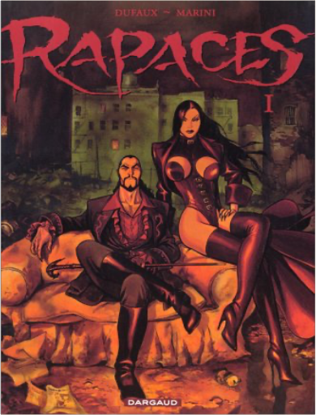

peter pan, tome 4 : mains rougesrégis loisel peter pan, tome 4 : mains rougesrégis loisel  Mais si ! Peter Pan a existé ! À Poulbot de White Chapell, le quartier de Londres le plus populeux en cette année 1887, il survit vaille que vaille dans un monde d'adultes corrompus par la misère. Un soir d'hiver, la fée Clochette vient l'arracher à sa mère ivrogne et aux appétits glauques des clochards privés d'amour. Peter Pan découvre alors le monde féerique imaginé par sir James James Barrie. Enfin, féerique, pas tant que ça. On y meurt aussi...  peter pan, tome 5 : crochetrégis loisel peter pan, tome 5 : crochetrégis loisel C'est l'événement BD de l'année 2002 : le cinquième volet de la saga de Peter Pan. Avant-dernier de la série, Crochet voit s'affronter Peter et l'affreux capitaine manchot. Celui-ci est bien décidé à se débarrasser de ce gamin insolent. Justement, l'un de ses marins vient de lui bricoler un superbe crochet serti de diamants étincelants... De quoi savourer une vengeance remâchée depuis belle lurette. Seulement voilà : Crochet n'a pas que Peter pour ennemi. Un certain crocodile reconnaissable à son bruit de réveil lancinant s'attache à ses pas et le poursuit jusque dans ses rêves. Tic-tac, tic-tac… Pauvre Crochet ! Lui qui fait trembler d'effroi ses meilleurs marins se laisse glacer par une terreur insurmontable dès que le crocodile pointe ses dents et ses yeux globuleux. Le second du navire, Mouche, décide alors d'inventer un leurre à l'effigie de son capitaine. Mais le cruel croco n'est pas du genre à lâcher prise facilement… Peter, de son côté, s'offre un petit voyage à Londres chez son cher Mr Kundal. Bien mal en point, le vieux bonhomme lui remet un trésor original : une lettre cachetée. À l'intérieur, une photographie de femme…  la quête de l'oiseau du temps, avant la quête, tome 5 - l'empriseLe Tendre, Loisel la quête de l'oiseau du temps, avant la quête, tome 5 - l'empriseLe Tendre, Loisel Raya, la fille du prince sorcier, a été tuée lors d'un traquenard préparé par le sinistre ordre du Signe alors qu'elle était sous la protection du chevalier Bragon et de son élève Bulrog. Ces derniers ont survécu, mais Bragon est affaibli par une chute qui l'a rendu amnésique, et son esprit est contrôlé par un vieil homme qui appartient à l'ordre du Signe. Bulrog a réussi à rejoindre la famille de Bragon, il doit maintenant prévenir Mara et son père ? et, pour cela, éviter les espions qui ont manigancé ce piège et qui entourent le prince et sa fille. Bientôt, le bruit court que Bragon a rejoint l'ordre, et la peur envahit le pays d'Akbar...  la quête de l'oiseau du temps, avant la quête, tome 6 - kryllLe Tendre, Loisel la quête de l'oiseau du temps, avant la quête, tome 6 - kryllLe Tendre, Loisel Le chevalier Bragon poursuit son périple au coeur de des terres éclatées de La Marche et affronte la secte de l'Ordre du Signe, de plus en plus menaçante. Mais Bragon, esseulé depuis la mort du père de Mara, peut compter sur l'aide de Bulrog qu'il forme aux armes, de la même façon qu'il fut formé au combat par Le Rige. La Conque de Ramor, protégée par les habitants de la cité des Gris-Grelets, est menacée, devenant un objet de convoitise et un enjeu pour chaque camp, notamment pour la secte de l'Ordre du Signe. Afin d'avoir le champ libre, elle doit d'abord se débarrasser de Bragon et fait alors appel à la tribu des Méridines dont fait partie Kryll, une jeune femme vierge. Les femmes de cette tribu ont en effet un terrible pouvoir, celui de secréter une substance mortelle qui s'insinue dans le corps de leur premier amant... rapaces, tome 1enrico marini, jean dufaux Aux temps ancestraux de L'Inquisition, un peuple d'immortels malfaisants décide de modifier le cours de son destin. De prédateurs assoiffés de sang, ils deviennent tyrans avides de pouvoir. Ils troquent du même coup l'ombre pour la lumière et viennent exercer leur puissance maléfique sur les simples mortels jusqu'au jour où le premier signe de dégénérescence apparaît. C'est le moment choisi par les Rapaces, couple de fauves sanguinaires, pour sortir de l'ombre...  rapaces, tome 2enrico marini, jean dufaux rapaces, tome 2enrico marini, jean dufaux Aux temps ancestraux de L'Inquisition, un peuple d'immortels malfaisants décide de modifier le cours de son destin. De prédateurs assoiffés de sang, ils deviennent tyrans avides de pouvoir. Ils troquent du même coup l'ombre pour la lumière et viennent exercer leur puissance maléfique sur les simples mortels jusqu'au jour où le premier signe de dégénérescence apparaît. C'est le moment choisi par les Rapaces, couple de fauves sanguinaires, pour sortir de l'ombre... |


 Made with Delicious Library
Made with Delicious LibraryNancy, State zipflap congrotus delicious library Thomas, Julien